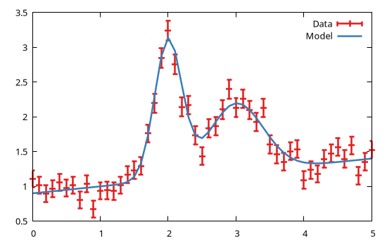

Parameter constraints
Models are characterized by parameters (see Basic concepts and data types) whose values are modified during fitting until a convergence criterion is met, and the best fit values are identified. In many cases, however, the parameters can not vary arbitrarily but should satisfy some constraints for their values to be meaningful. GModelFit.jl supports the definition of constraints by fixing the parameter to a specific value, limiting the value in a user defined range, or by dynamically calculating its value using a mathematical expression involving other parameter values. In the latter case the parameter is not free to vary in the fit since its actual value is determined by the patch constraint, hence it is dubbed a patched parameter. Such unused parameter can optionally be repurposed as a new free parameter in a parametrized patch expression (see example below).
An important concept to bear in mind is that the GModelFit.Parameter structure provides two field for the associated numerical value:
val: is the parameter value which is being varied by the minimizer during fitting. The value set before the fitting is the guess value. The value after fitting is the best fit one;actual: is the result of the patch expression evaluation, and the actual value used when evaluating a component via itsevaluate!method. Note that this value will be overwitten at each model evaluation, hence setting this field has no effect. Thevalandactualvalues are identical if no patch constraint has been defined.
A parameter constraint is defined by explicitly modifiying the fields of the corresponding GModelFit.Parameter structure. More specifically:
- to set a parameter to a specific value: set the
valfield to the numeric value and set thefixedfield totrue; - to set a parameter value range: set one or both the
lowandhighfields (default values are-Infand+Infrespectively); - to constraint a parameter to have the same numerical value as another one with the same name (but in another component): set the
patchvalue to the component name (it must be aSymbol); - to dynamically calculate an
actualvalue using a mathematical expression depending on other parameter values: set thepatchfield to an anonymous function generated with the@fdmacro. The function must accept a single argument (actually a dictionary of components) and return a scalar numberl; - to define a parametrized patch expression: create an anonymous function with the
@fdmacro with two arguments, the first has the same meaning as in the previous case, and the second is the free parameter value. Note that patched parameter loses its original meaning, and becomes the parameter of the patch expression; - to define a patch constraint involving parameters from other models in a Multi-dataset fitting scenario: simply use
mpatchin place ofpatch, and the first argument to the λ-function will be a vector with as many elements as the number of models in theVector{Model}object.
The following examples show how to define constraints for each of the afore-mentioned cases.
Example
We will consider a model for a 1D domain consisting of the sum of a linear background component (named bkg) and two Gaussian-shaped features (l1 and l2):
using GModelFit
model = Model(:bkg => GModelFit.OffsetSlope(1, 1, 0.1),
:l1 => GModelFit.Gaussian(1, 2, 0.2),
:l2 => GModelFit.Gaussian(1, 3, 0.4),
:main => SumReducer(:bkg, :l1, :l2))Assume that, for the model to be meaningful, the parameters should satisfy the following constraints:
- the
bkgshould have a fixed value of 1 atx=1, and a slope which is in the range [0:0.2]:
model[:bkg].offset.val = 1
model[:bkg].offset.fixed = true
model[:bkg].slope.low = 0
model[:bkg].slope.high = 0.2- the normalization of
l1andl2must be the same:
model[:l2].norm.patch = :l1- the width of
l2must be twice that ofl1(patched parameter):
model[:l2].sigma.patch = @fd m -> 2 * m[:l1].sigma- the center of
l2must be at a larger coordinate with respect to the center ofl1. In this case we re-interpret themodel[:l2].centerparameter as the distance between the two centers, and create a parametrized patch expression to calculate the actual center value ofl2:
model[:l2].center.patch = @fd (m, v) -> v + m[:l1].center
model[:l2].center.val = 1 # guess value for the distance between the centers
model[:l2].center.low = 0 # ensure [l2].center > [l1].centerWe can fit the model against a mock dataset (see Generate mock datasets):
dom = Domain(0:0.1:5)
data = GModelFit.mock(Measures, model, dom)
bestfit, stats = fit(model, data)(Components:
╭───────────┬────────────────┬───────┬─────────────┬───────────┬───────────┬───────────┬─────────╮
│ Component │ Type │ #Free │ Eval. count │ Min │ Max │ Mean │ NaN/Inf │
├───────────┼────────────────┼───────┼─────────────┼───────────┼───────────┼───────────┼─────────┤
│ main │ SumReducer │ │ 111 │ 0.8951 │ 3.196 │ 1.558 │ 0 │
│ ├─╴bkg │ OffsetSlope_1D │ 1 │ 36 │ 0.8951 │ 1.419 │ 1.157 │ 0 │
│ ├─╴l1 │ Gaussian_1D │ 3 │ 72 │ 1.088e-49 │ 2.05 │ 0.2004 │ 0 │
│ └─╴l2 │ Gaussian_1D │ 1 │ 82 │ 3.91e-13 │ 1.025 │ 0.2004 │ 0 │
╰───────────┴────────────────┴───────┴─────────────┴───────────┴───────────┴───────────┴─────────╯
Parameters:
╭───────────┬────────────────┬────────┬──────────┬───────────┬───────────┬───────────┬─────────────────────────────╮
│ Component │ Type │ Param. │ Range │ Value │ Uncert. │ Actual │ Patch │
├───────────┼────────────────┼────────┼──────────┼───────────┼───────────┼───────────┼─────────────────────────────┤
│ bkg │ OffsetSlope_1D │ offset │ -Inf:Inf │ 1 │ (fixed) │ │ │
│ │ │ x0 │ -Inf:Inf │ 1 │ (fixed) │ │ │
│ │ │ slope │ 0:0.2 │ 0.1049 │ 0.009656 │ │ │
├───────────┼────────────────┼────────┼──────────┼───────────┼───────────┼───────────┼─────────────────────────────┤
│ l1 │ Gaussian_1D │ norm │ 0:Inf │ 1.022 │ 0.03548 │ │ │
│ │ │ center │ -Inf:Inf │ 2.004 │ 0.009922 │ │ │
│ │ │ sigma │ 0:Inf │ 0.1989 │ 0.007297 │ │ │
├───────────┼────────────────┼────────┼──────────┼───────────┼───────────┼───────────┼─────────────────────────────┤
│ l2 │ Gaussian_1D │ norm │ 0:Inf │ 1 │ (fixed) │ 1.022 │ l1 │
│ │ │ center │ 0:Inf │ 1.004 │ 0.02822 │ 3.008 │ (m, v)->v + (m[:l1]).center │
│ │ │ sigma │ 0:Inf │ 0.4 │ (fixed) │ 0.3978 │ m->2 * (m[:l1]).sigma │
╰───────────┴────────────────┴────────┴──────────┴───────────┴───────────┴───────────┴─────────────────────────────╯
, Fit results: #data: 51, #free pars: 5, red. fit stat.: 0.95138, Status: OK
)and plot the results with Gnuplot.jl:
using Gnuplot
@gp coords(dom) values(data) uncerts(data) "w yerr t 'Data'" :-
@gp :- coords(dom) model(dom) "w l t 'Model'"
See Multi-dataset fitting for an example on how to create a patch epression involving multiple models.